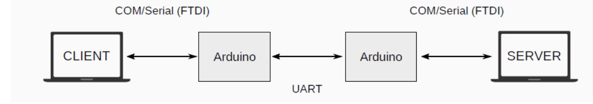
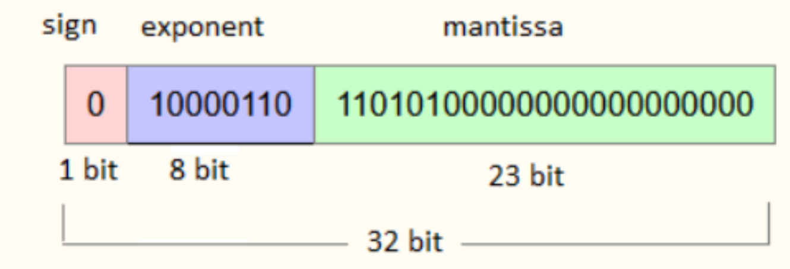

Projeto 2 – Desafios Client/Server
Nesse segundo projeto você e sua dupla irão construir uma aplicação utilizando os arquivos base fornecidos no projeto 1. No entanto, para que vocês fiquem mais íntimos desses arquivos, preparando o terreno para o projeto 3, alguns desafios serão propostos.
1) Arquitetura
Primeiramente, agora vocês deverão ter arquivos separados para o cliente e para o servidor. Aconselha-se ter os 5 arquivos cliente em um computador e os 5 arquivos server em outro computador. Quando estivermos comunicando dois computadores, a arquitetura deverá envolver dois Arduinos, cada um conectado a um computador. Você terá que descobrir como conectar os Arduinos. Precisará de jumpers.

2) Inicialização
A aplicação server deverá ser inicializada antes da aplicação cliente. Feito isso, a aplicação server deve permanecer em um estado de espera por qualquer envio de dados vindos do cliente.
O primeiro byte a ser então enviado pelo client deve ser um byte de sacrifício. Isso porque há um problema de hardware com as portas dos computadores que geram dados espúrios ao serem inicializadas e corrompem o primeiro byte. Sendo assim, usamos um primeiro byte para gerar o erro e depois tudo ocorrer normalmente.
O server deve então ser iniciado de maneira a ficar esperando esse byte de sacrifício. Para isso, copie o seguinte código na aplicação server logo após o enable da porta COM:
print("esperando 1 byte de sacrifício")
rxBuffer, nRx = com1.getData(1)
com1.rx.clearBuffer()
time.sleep(.1)
No lado cliente, ao ser inicializado (após a inicialização do server), deverá enviar o byte de sacrifício. Para o envio desse byte de sacrifício, copie as linhas a seguir logo após o enable da porta COM:
Feito o envio (pelo lado client) do byte de sacrifício, o server deve receber esse byte (corrompido) e desprezá-lo. Você deverá ver no prompt uma mensagem de erro do tipo:
Esse erro foi causado porque o byte foi corrompido e não foi possível decodificá-lo. Mas agora tudo funcionará bem para os próximos bytes.
Após receber e desprezar esse byte de sacrifício, o server deve voltar ao estado de espera de um próximo envio.
3) O que deve ser enviado
Uma aplicação (client) deverá enviar via transmissão serial UART uma sequência de números. Cada número deverá estar entre os intervalos [−1 × 10³ ; +1 × 10³] e possuir no mínimo 6 casas de precisão. Exemplo:
- 45,450000
- −1,435670
- 154,76783
Os números serão recebidos pelo server, que deverá "printá-los" no prompt separadamente (1 número por linha).
O cliente deverá enviar uma certa quantidade de números, entre 5 e 15. O server não saberá a quantidade de números que irá receber. Os números a serem enviados podem estar "hard coded" ou informados pelo usuário.
Após a recepção, o server deverá retornar ao client uma mensagem informando a soma de todos os números recebidos. Essa resposta deve também ter a mesma precisão de 6 dígitos.
Caso a soma retornada pelo server não esteja correta na resposta, o cliente deverá expor uma mensagem avisando a inconsistência.
Se o server não retornar nada em até 5 segundos, o cliente deverá expor uma mensagem de time out.
Info
Importante! Lembre-se que o server não conhece a quantidade de números que serão transmitidos!
4) Avaliação
Você e sua dupla deverão apresentar para seu professor o código funcionando em 3 situações.
- Você deverá simular um caso de sucesso de transmissão.
- Um caso de erro (server recebeu os comandos com problema de interpretação). Nesse caso você pode forçar um erro com algo "hard coded" no seu código server para simular a situação.
-
Um caso de ausência de resposta por parte do server e mensagem de time out do cliente.
-
Nota C: conseguir enviar os números corretamente e o print for feito corretamente no lado server.
-
Nota C+: conseguir enviar os comandos, server respondendo com a soma dos números recebidos, não há excesso de dados e metadados sendo transferidos e o tempo de envio não for alto, sem pausas ou esperas.
-
Nota B: Adicionar time out.
-
Nota A+: Todos os itens anteriores no formato de ponto flutuante 32 bits IEEE, conforme explicado em aula.
Dica 1
Tente não alterar as camadas enlace, enlaceRx, enlaceTx e InterfaceFisica.
Base teórica sobre ponto flutuante 32 bits IEEE-754
Lembre-se da explicação feita em sala pelo seu professor. Tente codificar os números no padrão IEEE-754 ou usar uma biblioteca. Ao usar a biblioteca você deverá verificar a codificação.
Use sites e informações de sua IA favorita para relembrar o ponto flutuante 32 bits.
